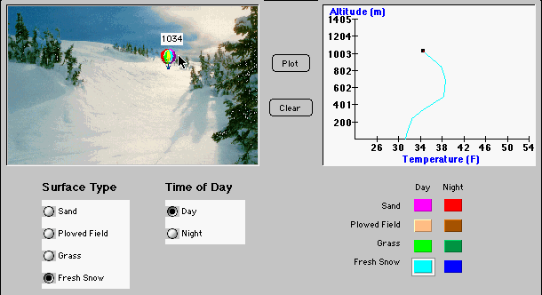

Radiation Balance Simulation
Introduction
The origins of this simulation involved the desire to convert a standard introductory meteorology lecture course into one where constructivism was the main instructional model and students were expected to take a more active role in their own learning-all without reduction of class size. The course goals were expanded to include learning how to learn science as well as learning science content. One of the major tools used to accomplish this was the use of World Wide Web server software that manages Internet class activities. ClassNet, Van Gorp and Boysen (1997), was developed to accomplish this task (http://classnet.cc.iastate.edu/). This tool allowed every student to be an active participant in learning activities with easy access to course materials, enhanced communication with the instructor and other students, rapid feedback concerning assignment and exam scores, and ready access to their private records of course performance.
Course materials have been designed for introductory science courses at the secondary and college level. They are intended to be supplemental to the course, allowing the instructor to decide which materials to use and which to omit. Experience with these materials has shown that their effect, especially the effect of the simulations, is gradual and sufficient time must be allowed to observe a difference in student behavior and attitude. At Iowa State University students often find the simulations to be uncomfortable at first because they use them before they hear the corresponding lectures, but this approach is deliberate and is intended to create questions in students' minds so they will come to class seeking answers.
It is recommended that part of class time be allotted to the use of Small Group Activities. These allow students the opportunity to break away from the passive mode utilized in most large-scale classes and become more active learners. These activities have been well received by students. They often end up sitting in about the same place in the auditorium for every class meeting and usually look forward to interacting with the people who sit near them week after week. Various collaborative activities are used to draw each student into the construction of hypotheses for explaining observed scientific phenomena or processes. Lectures are then used to provide explanations when students have explored, tested and questioned various factors that relate to central course concepts.
Materials development for the new learning environment did not rely on traditional instructional development models. The new materials could not be designed to simply teach the course content when the goal was to encourage the learner to explore, conjecture and test ideas. The chosen solution was to develop problem-based simulations that pose scenarios and provide tools with which learners can explore, and that accurately reflect the results of specific learner's actions. The materials have served to set the stage for further learning by revealing misconceptions, raising questions, activating relevant existing knowledge, and alerting the learner to the structure and utility of the material to be learned.
Description of the RadiationSim Simulation
RadiationSim (Figure 1) is a simulation of radiation processes in the earth's atmosphere caused by solar, terrestrial, and atmospheric radiation transfer. Students analyze temperature data measured by a balloon (radiosonde) that they "launch" both in the morning and evening over four types of terrain (sand, plowed field, grass or fresh snow). As the balloon is dragged and dropped to various heights in the simulated atmosphere, the temperatures at these altitudes are automatically plotted on a graph. Several temperature profiles may be plotted concurrently to compare differences before clearing the graph.

Figure 1. RadiationSim
The students are asked to explore the various temperature profiles that can occur under different surface conditions and times of day. Then they answer questions designed to test their understanding of the concepts experienced in the simulation. Specifically, the questions address the effects of ground cover, time of day and altitude on temperature.
Students may use the simulation in any manner they feel necessary in order to answer the questions.
Instructional Goals
The Radiation Balance Simulation has two instructional goals. First, it provides an environment in which beginning students can assume the role of scientist. Second, if students reason beyond the data collected, the simulation raises some interesting "why" questions that lead to a much deeper understanding of long and short wave radiation.
For these goals to be met, the instructor must support the simulation by creating the proper initial environment, emphasizing the process of scientific discovery, and building higher level discussions on the student's RadiationSim experience. Strategies for providing that support are discussed herein.
Assigning RadiationSim
This simulation is intended to be the initial simulated activity the students encounter in the meteorology course. It is also intended to be a pre-lecture experience rather than a post-lecture practice assignment. Experience has shown that this is a new type of learning endeavor for most students and much scaffolding needs to be provided. The mechanics of the simulation should be demonstrated and some global strategies should be discussed. It is most important, however, that the teacher's role not usurp the critical learning opportunities from the students. The teacher's role can be seen more clearly if the learning goals are understood.
During this initial simulation the students should begin to develop a strong Problem Solving Strategy. Most students are very weak in this area and need considerable encouragement in developing this skill. An example of a Problem Solving Strategy that is the desired result from the use of RadiationSim is as follows:
1. Explore the simulation, identifying the inputs, outputs and goals.
2. Estimate and note the expected outcomes.
3. Develop a plan to test these expectations.
4. Collect sufficient data and record results.
5. Analyze and summarize the data.
6. Compare and contrast the results with the expected results.
7. Question the reasonableness of the results and seek explanations for them.
8. Rethink the process, identifying additional data that needs to be collected and important questions that need to be resolved.
With these expectations in mind, it is recommended that the teacher demonstrate the simulation by showing how to activate it, set the parameters, move the balloon, plot the points and read the graph. Students should then be challenged to "become a meteorologist" and make predictions about the relationships among ground cover, time of day, altitude and temperature.
Students would be encouraged to develop a plan to test their expectations and, after using the simulation, reach a conclusion about the accuracy of their predictions. At this point in the learning process, it is important for students to develop their own strategy to test their theories; the teacher will present the "ideal" Problem Solving Strategy only after students have generated one of their own.
Post-Simulation Activity
Following students' use of the simulation, it is recommended that students be assigned a small group activity of sharing strategies used with the simulation exercise and agreeing on a good strategy. The teacher can solicit strategies from selected groups, outline one or two good approaches and discuss their merits. During this time the eight steps in the Problem Solving Strategy listed above can be presented and "methods" of meteorology can be described. Experience has shown that special attention also needs to be given to interpretation of graphs and their use to represent relationships of this type. The use of symbolic representation is a deficiency in many a student's knowledge base.
After the strategies have been covered, the results from the simulation can be shared. Questions of reasonableness of the conclusions and scientific basis for these phenomena can be raised. Suggested questions that may be helpful in initiating discussion are listed below. These questions should lead directly to a lecture on long and short wave radiation and their interaction with the earth's temperature.
Suggested Thought Questions for Class or Group Discussion
1. Of the four surfaces in RadiationSim (sand, plowed field, grass and snow), which one gets the hottest during the daytime? The coldest? Why?
2. How does temperature change with altitude? How do the daytime air temperatures above each surface compare with nighttime? How are they the same? How are they different? What causes the differences?
3. Focus on the temperature changes between 0 and 600 meters for all four surfaces. As altitude increases in the daytime, what happens to the temperature? What about nighttime? What causes nighttime temperatures to increase below 600 meters?
4. What makes the earth warm?
5. What happens to the sun's energy after it strikes the earth? Where does it go? Why doesn't the earth become progressively warmer with time?
6. If heat from the sun passes through the atmosphere on its way to the earth's surface, does this heat make the atmosphere as warm as the earth's surface? Explain the reasons for your answer.
7. What change (if any) would there be in the average temperature of the earth's surface if there were no atmosphere?
Lecture Outline
I. All objects (above absolute zero) emit radiation.
A. Higher temperature: the maximum emission of radiant energy occurs at shorter wavelengths (sun ~ 0.5um)
B. Lower temperature: the maximum emission of radiant energy occurs at longer wavelengths (earth ~ 10um)
II. Objects not only radiate energy, they absorb it as well.
A. Warming: (energy absorbed > energy radiated)
B. Cooling: (energy absorbed < energy radiated)
III. Substances often interact with radiation in curious ways
A. The atmosphere absorbs some wavelengths and is transparent to others.
1. It is largely transparent to visible radiation from the sun.
2. It absorbs and re-emits certain wavelengths in the IR region. This helps warm the earth's surface and lower atmosphere.
B. Clouds are also good absorbers at some wavelengths and poor absorbers at others.
1. They are poor absorbers of visible solar radiation because they reflect much of the sunlight back into space.
2. They are good absorbers and emitters of IR radiation from the earth.
3. Thus, clouds tend to keep daytime temperatures lower and nighttime temperatures higher.
IV. An object that reflects a great deal of sunlight absorbs very little short-wave radiant energy.
A. Albedo: the reflectivity of a surface.
B. Objects that absorb radiation will heat up even if they are good emitters.
V. Radiation exchange
A. The sun radiates short-wave energy to the earth.
B. The earth absorbs this solar energy and re-radiates it to the atmosphere as IR.
C. The atmosphere absorbs IR energy from the earth and re-radiates it back to earth.
RadiationSim Getting started
One of the first, and perhaps the most important, step in the Scientific Method is forming a hypothesis. This exercise will guide students through problem solving from the beginning (forming a hypothesis) to the end (testing and summarizing their results) and all of the steps in between. In Part 2 of this exercise, students will be asked to run a simulation, and observe and summarize their findings.
Part 1 Forming a hypothesis
As demonstrated in class, this assignment allows you to collect your own temperature data at different heights in the atmosphere. Before beginning the simulation, please explain what you expect might happen. Consider the relationship of temperature and height and list any other variables you think might influence the temperature. Keep in mind that all hypotheses are not always necessarily "correct", but should exhibit considerable reasoning. You will be evaluated on the content of your hypothesis, rather than correctness. Please be as detailed as possible. Your thoughts will help guide you through the simulation. Depending on the supporting class management tools available, a text entry box might be provided for student response. The instructor needs to devise a means for getting the student submissions for this initial step before a password is given to students that will permit then to begin the actual simulation.
Part 2 Introduction to the Radiation Simulation:
Various meteorological parameters (temperature, humidity, and wind) above the surface of the earth are measured using balloons (radiosondes) twice each day at specific locations. The balloons are launched just before 12UCT (6 AM CST in Iowa) and 00UCT (6 PM CST). Data for 6 AM reflect conditions from the previous night; the 6 PM values represent daytime conditions. During the fall of 1997, a narrow band of snow fell across the state of Iowa. The data in this simulation are based on this event using the snow and surrounding surface conditions. Students will examine the differing effects of the various surface conditions on temperature. They will be asked to explore and observe various environments for both day and night conditions. Then they will use their best judgement to tie their experiences into a coherent picture. After they have made their observations, they should be asked to describe their conclusions.
Directions:
Drag the balloon in the simulation (see Figure 1) to various heights with the mouse. The height of the balloon (in meters) will be indicated. The temperatures corresponding to the various heights will be used to produce a vertical profile of temperature in the accompanying graph. Surface conditions and time of day will change the temperature profile. Compare the different profiles and record your general results for submission. Users may plot several profiles concurrently to compare differences before clearing the plot.
RadiationSim activity
Summarize your observations. Some things you might want to consider, but are not limited to, include:
What relationships did you find? What conclusions can be drawn?
How did the surfaces you chose affect the temperature profile?
What other variables came into play?
How did your initial expectations compare with your findings?
Do your conclusions seem reasonable?
What unanswered questions were generated by your experience?
Please be as complete as possible. Your responses will be used to generate discussion in class.
References
Van Gorp, M., and P. Boysen, 1997: ClassNet: Managing the virtual classroom. International Journal of Educational Telecommunications, (3/2), 279-292.